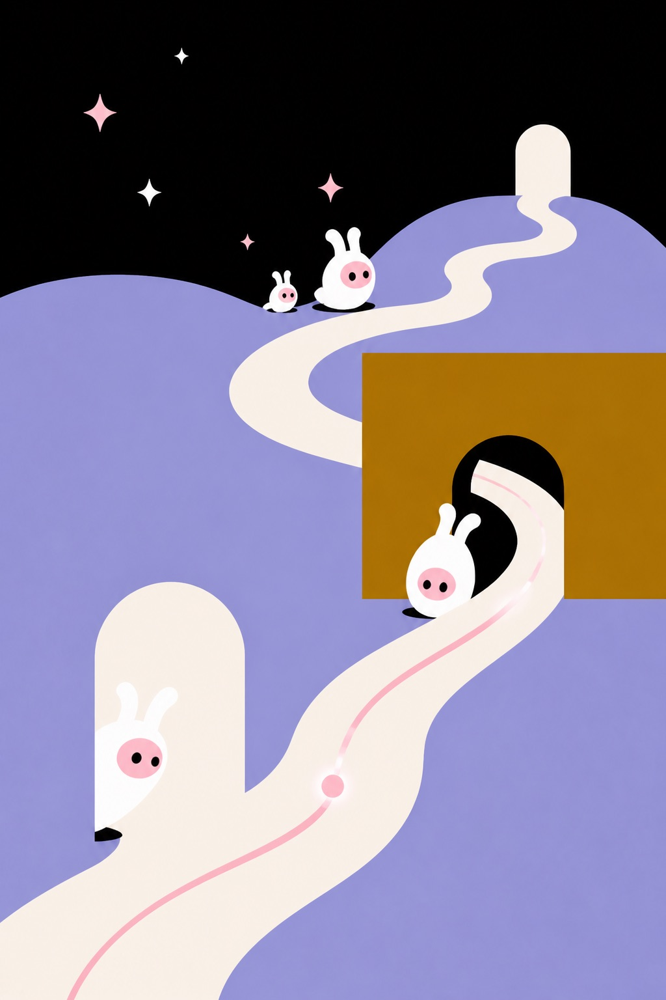
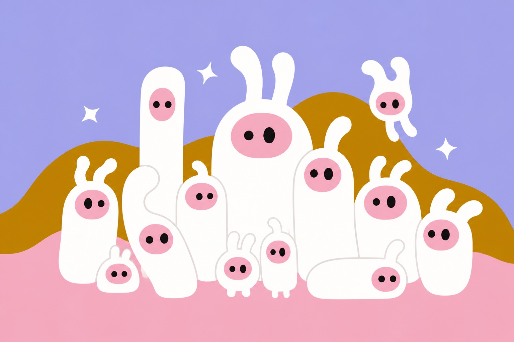
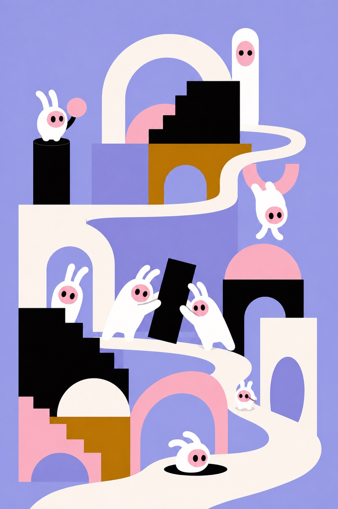
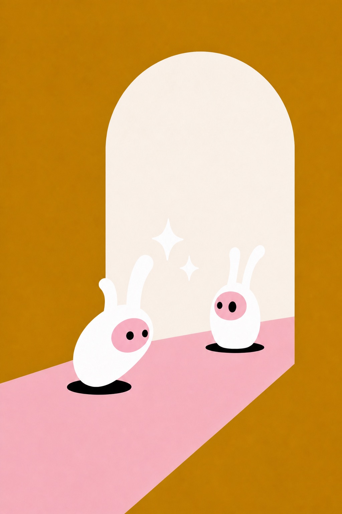
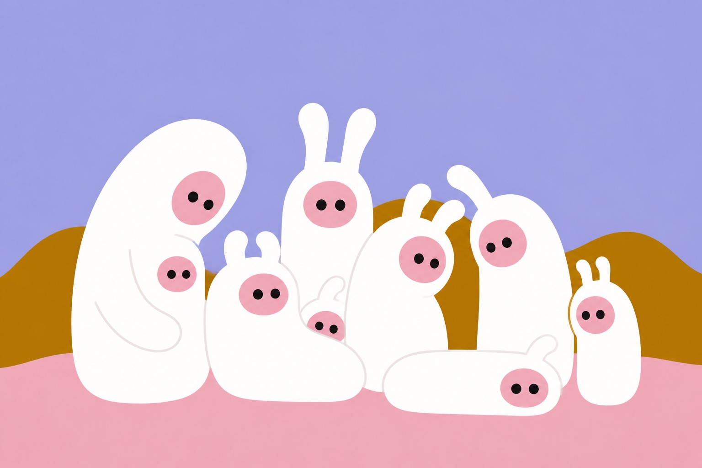
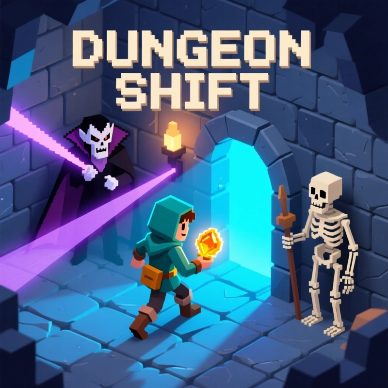
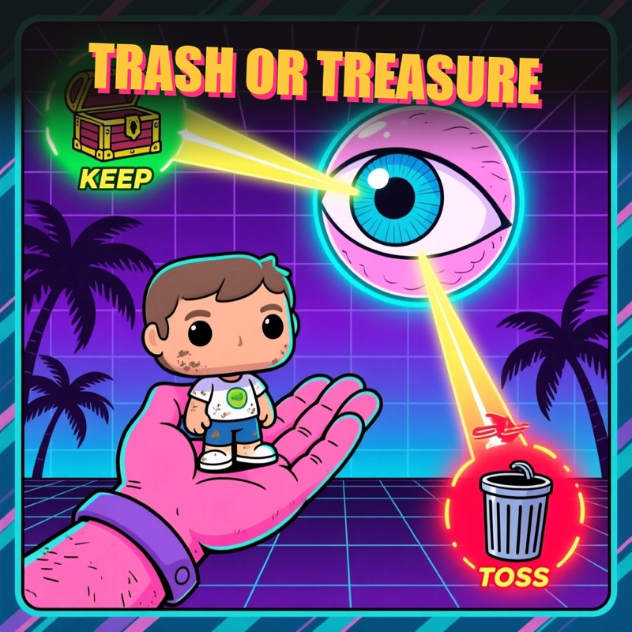
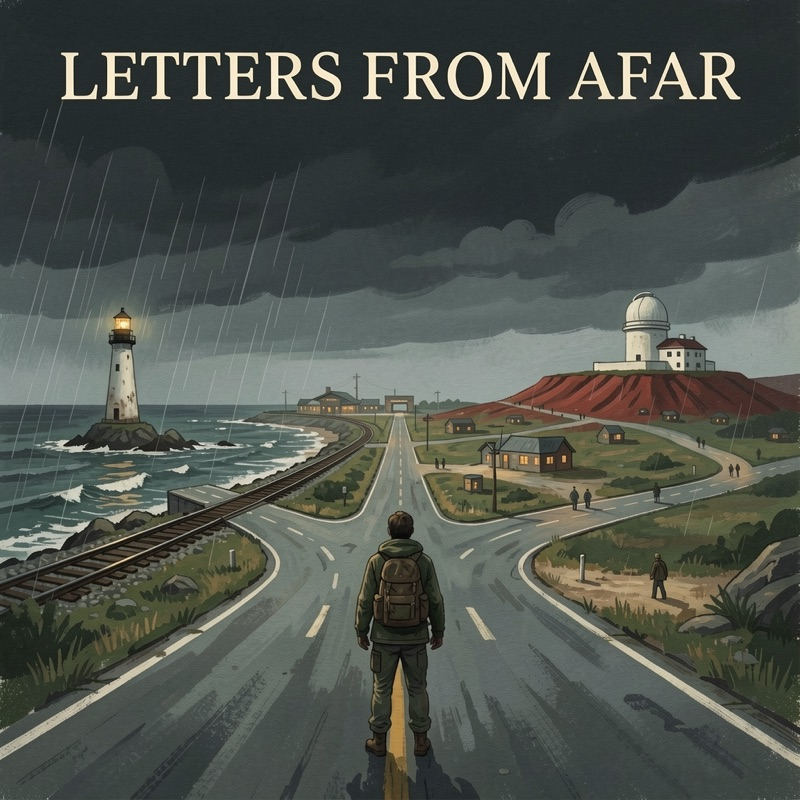
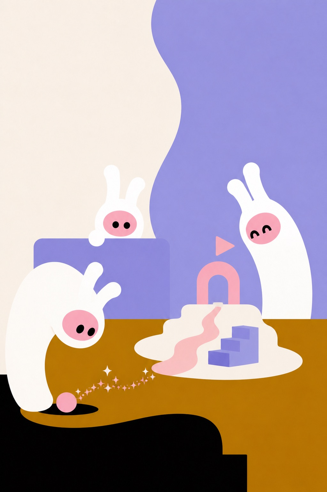

People already improvise
Games, voice rooms and daily puzzles became relationship rituals—even though none were designed for that job.
ALTERU · AIWAVES TECHNOLOGY · 2026
Make a world and leave it for someone.
You play, and a world comes out of it. It goes to one person—not a feed—and waits until they arrive.

01 · THE TREND
Text restored information. Video restored presence. But doing something together still asks two people to arrive at the same time, inside a scene someone already built.
Games, voice rooms and daily puzzles became relationship rituals—even though none were designed for that job.
Improvised togetherness disappears when the session ends. Nothing is left behind, so there is nothing to come back to.
A shared experience no longer needs a pre-built game or a booked event. It can become a daily behaviour.

02 · WHO THIS IS FOR
The first generation that makes things as easily as it types already lives socially inside games. Its relationships simply run on different clocks.
This is not a loneliness product. Everything here requires a second real person. We remove only the requirement that both people be there at the same time.
03 · THE SHIFT
Profiles display identity. Playable identity gives another person somewhere to go.
What stands in for you when you are away should not be a replica of what you would say. It should be a place people have walked into and changed.
04 · THE PRODUCT
No blank page. No creation intent. No tool to learn. One session produces a world, and that world has a recipient.

A sentence, a photo or a moment becomes rules. The creation interface disappears.
Every session leaves something another person can enter. Supply grows with use.
Addressed, not published. It does not fight a feed for attention.
Why AI is required: without generation, play produces a score. With generation, play produces a game—and keeps the place open while you are away.
05 · WHAT IT LOOKS LIKE


06 · THE LOOP, LIVE
These are not genre samples. Together they show the product thesis in working form: make for someone, deliver to them, let them leave a mark, and keep that mark in the world.

One player builds a real dungeon. Another enters later, changes its record, and sends the result back to its maker.
Enter a player-made dungeon
A player asks one friend to judge a real object. Their counter-verdict returns by push and completes the exchange.
Ask one friendWhile you are away, a friend acts through your profile. You return to choices, edits and a trace that they were there.
Visit a sleeping friend
Travellers arrive on different days, repair shared roads, leave trails and relay letters through one persistent world.
Follow the next letterNo single title claims the whole future product. Each is live evidence for one link in the loop the deck describes.
07 · WHAT EXISTS TODAY
We are early. We would rather show what exists than dress up a percentage.
A deterministic state-machine engine and component library that compound with every world built.
Token URLs and H5 delivery carry the loop from one person to another.
A notification and return system closes the asynchronous loop.
The product already runs across the surfaces where relationships happen.
PlayCanvas and 3DGS turn a real place into somewhere two people can move through.
We learn which generated worlds a second person actually finishes—the dataset the loop uniquely produces.
The signal we trust: across two products, the only social behaviour users produced on their own was remixing one another’s identities. That is why every world now has an owner and a recipient.
08 · THE BUSINESS
The asset that makes someone stay is the same asset that makes them spend. Retention and revenue are one mechanism read twice.
Your Alter carries what others left in it. That is why you want to make it look and feel like yours—without a feed or ads between friends.
A real place gives two people a reason to do the same thing: the raw material the loop runs on.
An outcome we welcome, not one we optimise for. Anonymous visitors leave nothing behind.

09 · WHY US
The engine and library improve with every world.
Addressed delivery already works across four surfaces.
Real behaviour, still small. We call it exactly what it is.
The next 90 days test whether sediment converts into pull and spend.
A large platform can win a first session with distribution. It cannot buy what has accumulated on your identity one visitor at a time.
Two arrows are running. One is observed narrowly. One is not proven.
10 · TEAM & FOCUS
WeChat AI Technical Director for ten years, leading intelligent voice systems and the recommendation algorithm behind Video Accounts—AI products used at billion-user scale.
He owns the three things AlterU turns on: the identity agent, the world-state engine, and product feel.
Experience from Meta and Apple, owning acquisition and consumer insight.
Former CTO of Celer Network and a serial founder in web infrastructure.
The people who make a generated world actually worth finishing.
Quality up, cost down, completion data thicker.
Push holdout · unprompted second round · per-store unit.